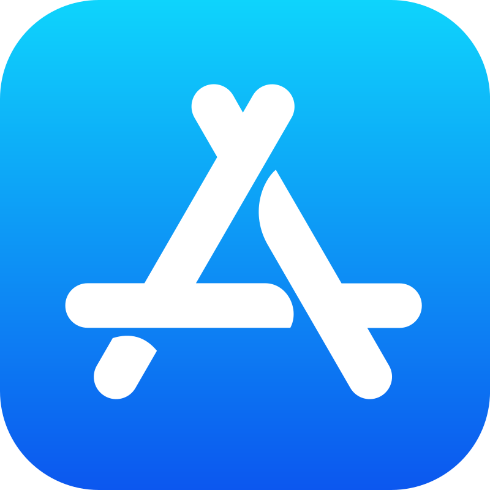

Installer iSH
Pour installer CLMMobile sur iOS, vous devez d'abord installer l'application iSH. C'est un émulateur Linux qui vous permet d'exécuter CLMMobile en arrière-plan pendant que vous utilisez d'autres applications.
Vous pouvez la télécharger sur l'App Store d'Apple.

Obtenir iSH sur l'App Store
Après avoir téléchargé iSH depuis l'App Store, vous devez activer les services de localisation pour permettre à l'application de continuer à fonctionner en arrière-plan. CLMMobile fait croire à iOS qu'il a besoin de votre position (alors qu'il ne l'utilise à aucune fin) afin de rester actif en arrière-plan lorsque d'autres applications sont au premier plan.
Pour activer les services de localisation, ouvrez d'abord iSH et collez la commande suivante, puis appuyez sur Entrée ou Retour:
iOS peut ensuite vous demander d'autoriser les services de localisation pour iSH. Sélectionnez Toujours.